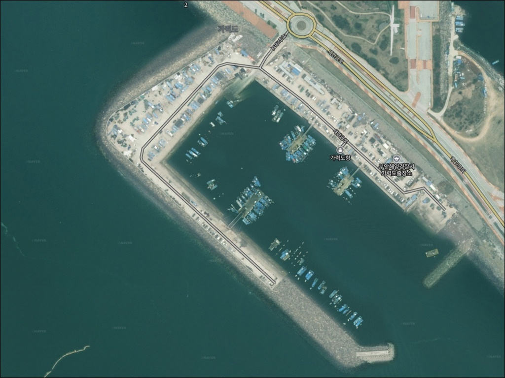
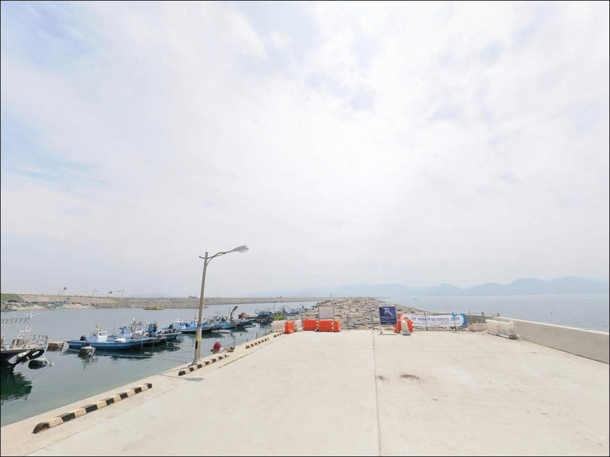
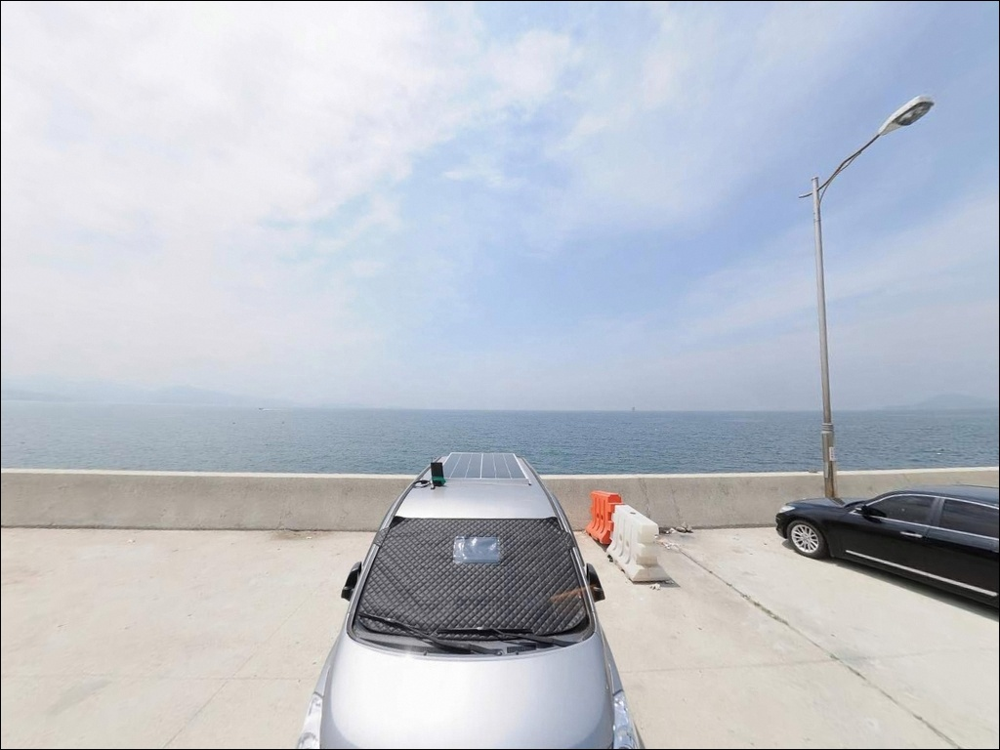
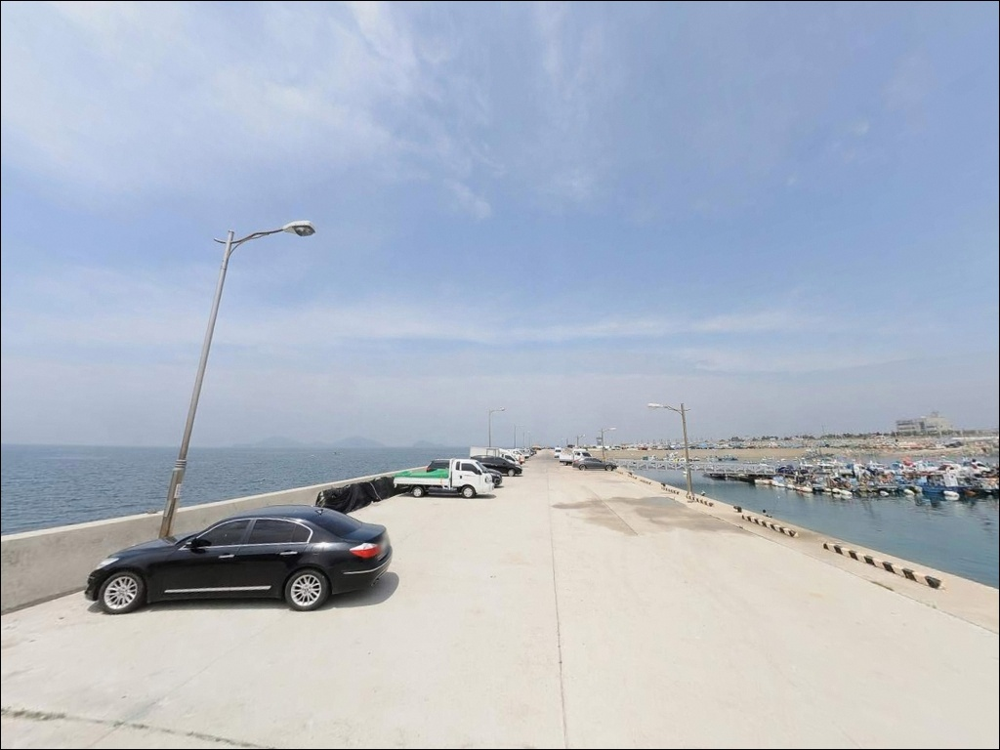
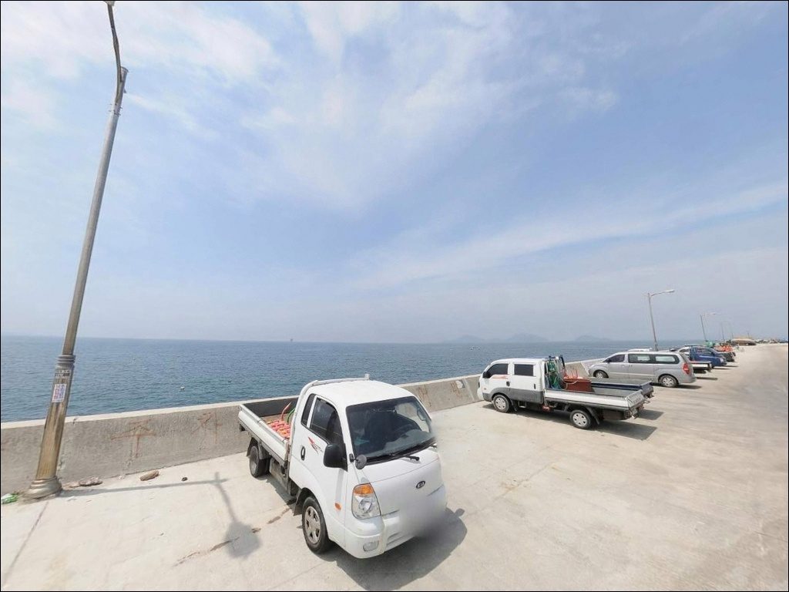
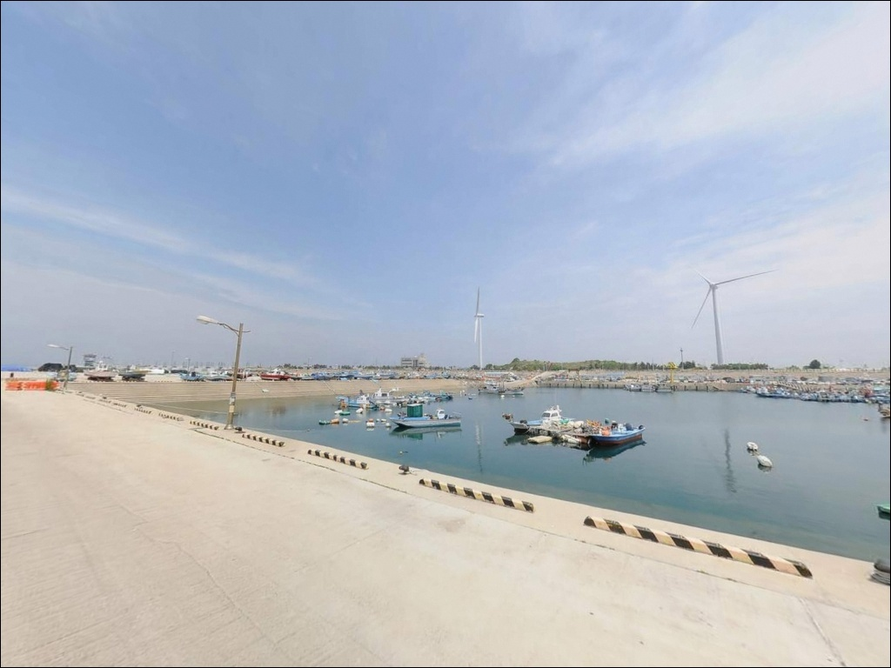
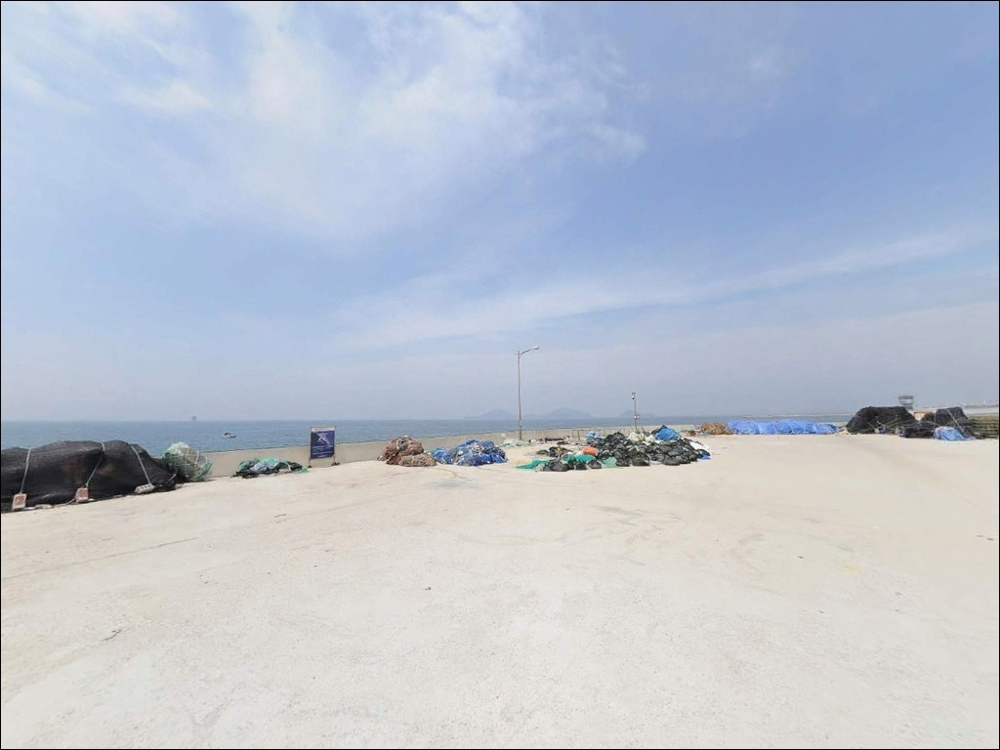
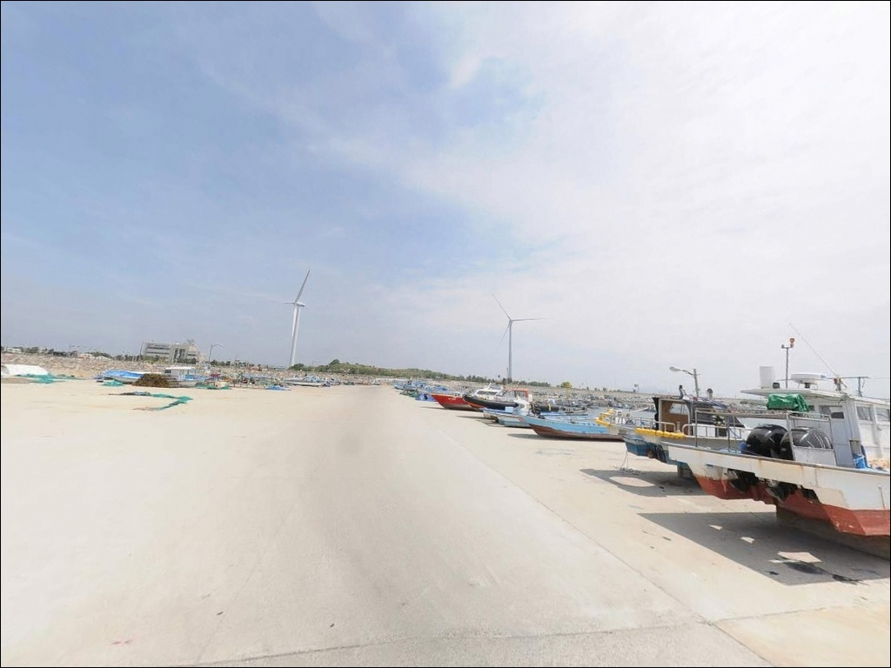
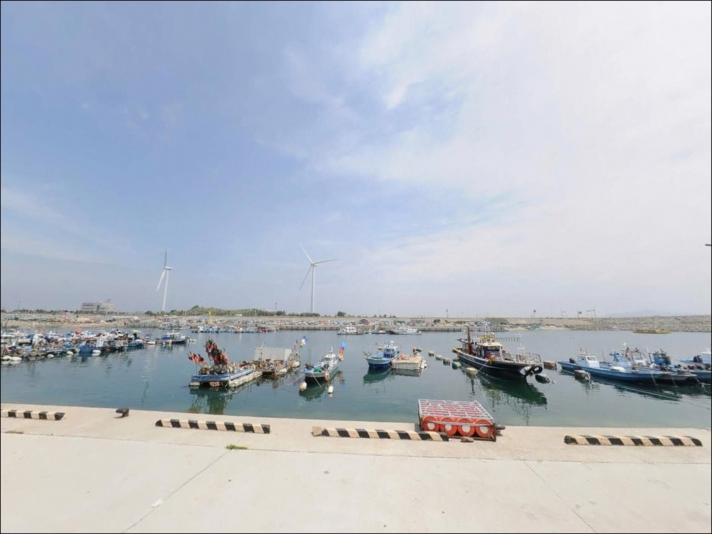

이 페이지에는 광고(제휴 링크 포함)가 있으며, 광고 링크를 통해 구매하면 운영자가 판매 수익 또는 수수료를 받을 수 있습니다. 포인트 사진: 카카오맵 스카이뷰·로드뷰. 이 페이지의 지도·사진 이미지는 카카오맵의 실제 서비스 이미지와 다를 수 있습니다.


가력도항, 전북 부안군 자연의 여백을 느낄 수 있는 차박, 낚시 명소
포인트 안내
가력도항
전북 부안군 변산면 대항리 583
가력 배수갑문은 하루 두 차례 개방되며,
개방 시 주변 3km 구간에 급류가 발생합니다.
갑문 사이렌이 울리면 채비를 회수하고
즉시 자리를 피해야 하는 구조로,
개방 일정을 모르면 낚시 중단은 물론
안전까지 위협받을 수 있는 포인트입니다.
새만금로(국도 77호선)를 따라
1호 방조제 끝단에 자리한 가력도항은
부안군 관할 어항으로
비안도·두리도행 여객선이 정기 운항하는
선착장을 겸하는 항구입니다.
내항 방파제와 갑문 소공원 일대가
낚시 가능 구역으로 알려진 포인트입니다.
이 글은
가력도항의 진입 동선,
낚시 가능 구역과 방식별 조건,
차박 체류 여건에 집중합니다.
조황 단정이나 특정 어종 보장은
이 글의 범위에 포함되지 않습니다.

1. 포인트 위치 및 진입 동선 분석
가력도항은 새만금로를 따라
방조제 위를 직선으로 달리다 보면
4차선 포장 도로 끝에서
만나게 되는 구조입니다.
급경사나 비포장 구간은 없으며,
진입로 자체는
승용차부터 중형 SUV까지 무난한 수준입니다.
항구 부지 안은 어선 이동 구역과
개방 주차 공간이 함께 존재하는 구조입니다.
넓은 평지가 많아 회차는 비교적 수월하며,
방파제 진입로 주변 공터와
갑문 소공원 방향 노면을
주차 후보로 활용할 수 있습니다.
다만 여객선이 정기 운항하는 선착장이므로
선박 접안 구역과 출항 동선을
먼저 확인하고 자리를 잡아야 합니다.
항로 인접 구간에 채비를 던지면
선박 통행 시 회수해야 하는 상황이 생깁니다.

2. 차박 환경 평가 및 야간 체류 여건
가력도 생태공원이 항구와 인접한 위치에 조성되어 있어
공원 주변 주차 공간을 활용한
차박 시도가 가능한 구조입니다.
민가 밀집도가 낮고 외딴 환경에 가까운 편이라
야간 소음은 적지만
방조제 위라는 특성상 바람 노출이 강합니다.
새만금 방조제를 지나는 차량은
야간에도 간헐적으로 통행하는 구조로,
완전한 격리 환경은 아닙니다.
방파제 끝단 방향은 조명이 닿지 않는 구역이 있어
헤드랜턴은 필수로 갖춰야 합니다.
또한 갑문 개방 시 경광등과 사이렌이
야간에도 작동하는 구조라는 점을
미리 인지하고 체류해야 합니다.


3. 주변 편의시설 및 인프라 현황
가력도 생태공원 일대에
화장실과 휴게공간이 갖춰져 있습니다.
이동식 화장실도 운영됩니다.
항구와 생태공원이 인접한 구조라
기본 위생 환경은 확보되는 편입니다.
반경 3km 이내에
편의점이나 식당은 기대하기 어렵습니다.
가력도항은 방조제 끝단의 고립된 항구 특성상
생활 편의 인프라가 사실상 없는 구조입니다.
식수, 먹거리, 낚시 소품은 출발 전 완비하는 것이
현실적인 준비 방식입니다.
부안해양경찰서 가력도출장소가
항구 일대에 위치하므로
응급 상황 발생 시 연락처를
미리 저장해 두는 편이 좋습니다.

4. 가력도항 방문 전 반드시 확인할 사항
가력도항에서 가장 먼저 파악해야 할 것은
가력 배수갑문 개방 일정입니다.
갑문은 하루 두 차례 개방되며,
개방 시 주변 3km 구간에
선박 접근이 금지될 만큼 급류가 형성됩니다.
갑문 사이렌이 울리면 즉시 채비를 거두고
인근 구역을 벗어나야 합니다.
새만금 방조제 위 구역은
낚시금지 및 출입통제 구역으로 공식 지정되어 있습니다.
방조제 갯바위 쪽으로 진입하지 않도록
현장 안내판을 반드시 확인해야 합니다.
갑문 소공원은 갑문 운영 구역 경계와
현장에서 구분이 필요한 구간이므로,
진입 전 표지판 기준으로
낚시 가능 구역을 먼저 확인하는 것이 전제입니다.
서해 조석차는 크기 때문에
출조 전 바다타임에서 부안 기준 물때를 확인하고
만조 전후 타이밍을 먼저 계산해 출발 시각을 잡는 것이
기본 전략입니다.
구명조끼는 방파제 낚시에서 필수이며,
야간 낚시라면 미끄럼 방지 신발과
헤드랜턴을 반드시 챙겨야 합니다.

5. 지형 기반 낚시 여건 분석
가력도항은 내항과 외항의 구분이 뚜렷한
수로형 + 방조제형 복합 구조를 띠고 있습니다.
내항 쪽은 잔잔한 수역이 형성되는 편이고,
방파제 끝단과 갑문 소공원 방향으로 갈수록
수심 변화와 조류 흐름이 생기는 구간이 나타납니다.
내항 수심은 얕은 편이며
바닥은 모래와 갯벌 지형이 섞인 서해 특유의 구조입니다.
갑문이 열리는 시간 전후로
수로 방향 조류 흐름이 생기는 구조입니다.
조류가 살아 움직이는 타이밍에
방파제 끝단이나 갑문 소공원 외곽 방향에서
루어 계열 채비를 운용하면
이 포인트 지형 조건을 제대로 활용할 수 있습니다.
다만 갑문 개방 시간 직전후는
안전을 위해 접근하지 않는 것이 원칙입니다.
내항 방파제는 어선 정박 기능 위주의 구조로
방파제 끝단 모서리가 주요 탐색 지점입니다.
서해 조석차가 크기 때문에
만조 전후와 간조 전후의
수심 변화 폭이 상당하고,
이 수위 변화가 어종 활성도에
직접적인 영향을 미치는 구조입니다.
물때 계산 없이 찾아가면
수심이 너무 얕아 낚시 자체가 어려운
타이밍이 생길 수 있는 포인트입니다.
출조 전 가력도항 조황은
"가력도항 낚시" 또는 "부안 가력도 조황"으로
검색해 보시는 편이 좋습니다.
계절과 물때에 따른 조황 편차가 크므로
최신 현장 정보를 먼저 확인하는 것을 권합니다.


6. 가력도항에 어울리는 낚시 스타일
내항 방파제 전반에 걸쳐
원투낚시가 가장 무난하게 맞는 스타일입니다.
서해 내항의 모래·갯벌 바닥 지형에서는
붕장어와 노래미를 비롯해
시즌에 따라 다양한 바닥 어종을
기대해볼 수 있는 지형 조건을 갖추고 있습니다.
채비는 조류 강도에 맞춰
봉돌 무게를 조정하는 것이 기본입니다.
방파제 끝단과 갑문 소공원 방향 수로 변화 구간에서는
루어낚시가 어울립니다.
조류 흐름이 살아 있는 타이밍에
방파제 끝 모서리를 기점으로
메탈지그나 소프트 루어로
수중 암초와 수심 변화 구간을 집중 탐색하는
방식이 이 포인트 구조에 맞습니다.
내항 잔잔한 수역에서는 찌낚시도 운용할 수 있습니다.
숭어·전어 등 내항형 어종이
들물 타이밍에 수면층으로 올라오는 경향이 있어
찌낚시로 내항 중층을 공략하는 방식이
이 구조에 어울립니다.
에깅도 야간 시도가 가능한 스타일입니다.
방파제 구조물 주변과 갑문 소공원 쪽 외곽은
주꾸미·갑오징어가 서식할 수 있는
지형 조건을 갖추고 있습니다.
야간에 에기를 천천히 바닥 가까이 운용하는
방식이 이 포인트와 어울립니다.
에깅이란 에기(인조 미끼)를 사용해
갑오징어·주꾸미를 대상으로 하는
루어낚시 방식입니다.

7. 대안 포인트 및 플랜 B 동선
가력도항 낚시 여건이 기대 이하거나
갑문 개방 시간과 맞물려 낚시 공간이 좁아질 때는
차량으로 약 20~25km 거리의
격포항이 가장 확실한 대안입니다.
북방파제 610m, 남방파제 380m 규모로
서해안 대표 낚시 명소로 알려져 있으며,
낚시점·선상낚시 출조·식당까지
인프라가 갖춰진 항구입니다.
보다 가까운 대안으로는
비안도 선착장이 있습니다.
가력도항 인근 해역에 위치하며
바다타임에도 낚시 포인트로 등록된 곳입니다.
격포항으로 이동하기 전
먼저 확인해볼 수 있는 가까운 대안입니다.
차박 공간이 가력도항 방향에서 여의치 않을 경우,
방조제를 따라 이동하면서
너울쉼터나 소라쉼터 주차 공간을
대안으로 검토할 수 있습니다.

갑문 일정과 물때를 알고 가면
가력도항은 다르게 보입니다
원투낚시나 루어낚시를 즐기는 낚시인이라면
가력도항의 내항 방파제와
갑문 소공원 일대 수로 변화 구간은
서해 생활낚시의 다양한 여건을
한 포인트에서 경험할 수 있는 구조입니다.
인근 생태공원의 편의시설까지 갖춰져 있어
당일 출조나 1박 체류 모두
큰 부담 없이 시도할 수 있는 곳입니다.
반면 갑문 개방 일정을 모르거나
물때 확인 없이 찾아가면
낚시 가능 구역이 제한되고
안전 위협까지 생기는 포인트이기도 합니다.
갑문 일정 확인, 물때 계산, 낚시금지구역 숙지,
이 세 가지가 가력도항 방문의
기본 준비 조건입니다.
바람이 잦아드는 날,
방파제 끝단에 자리를 잡고
갑문 개방 전후 조류 흐름에
채비를 실어보는 낚시와 차박을
함께 즐기기 좋은 출조지입니다.